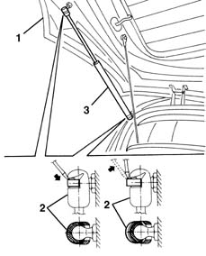

7015A28 l/h or r/h tailgate telescopic strut (one) - r+r
- Path
- Procedures > 70 FITTINGS > 7015 TAILGATE/ > 7015A tailgate assembly > 7015A28 l/h or r/h tailgate telescopic strut (one) - r+r
- Kind
- repair procedure (removal / refitting; the operation number is the code)
- Applies to
- all engines; all production periods
- Interactive page
- https://sloeber94.github.io/elrnDB-lYpsln/en/#/2429533
Applies to: all engines; all production periods
 Removing
Removing
 Refitting
Refitting1. Open the tailgate and support it.
2. Using a screwdriver, prise off (without detaching) the retaining clips on both sides.
3. Remove the telescopic strut.

Applies to: all engines; all production periods
Refitting
RemovingCheck that the telescopic strut is undamaged.
Refit the telescopic strut, press-fitting the ends of the anchoring pins.
Fit the retaining clips.
Check that the telescopic strut is working and the tailgate is properly supported.